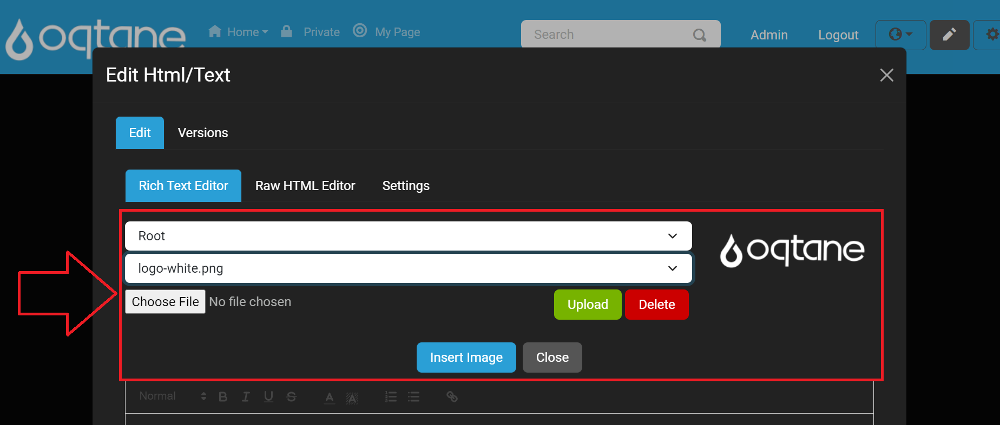
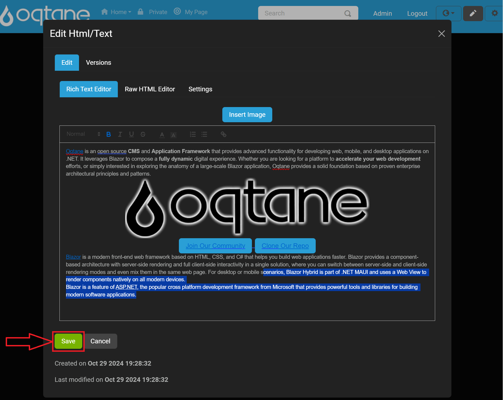
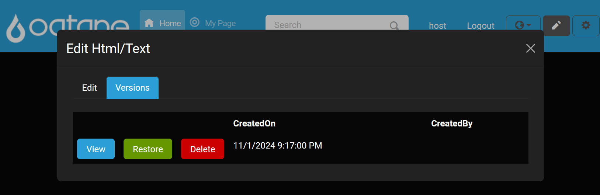
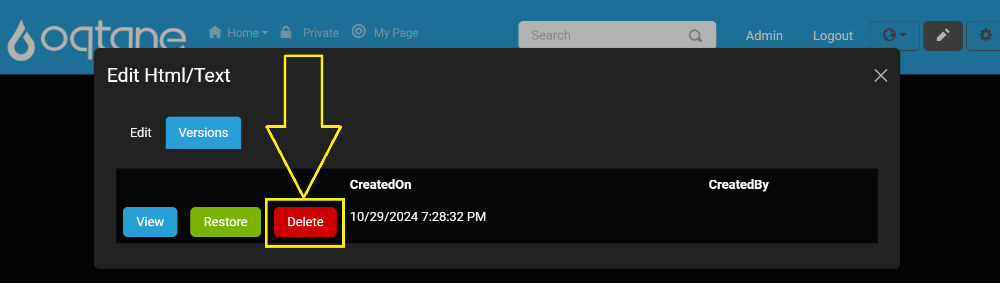

HTML/Text Editor
Overview
The HTML/Text Editor module in Oqtane enables you to create, edit, and restore content using a rich text editor (WYSIWYG) and a raw HTML editor. This module is ideal for exploring Oqtane's editing and content management features, including moving modules between panes, configuring settings, and managing roles.
Getting Started
To access the HTML/Text Editor:
Enter Content Editor mode by clicking the pencil icon.

Click the Edit Content button on the module to open the HTML/Text Editor.
The editor has two main tabs:
- Edit – Contains content editing tools.
- Versions – Manages past content versions with options to view, restore, and delete.
Edit Tab
The Edit tab provides three sub-tabs for different editing options:
Rich Text Editor – A WYSIWYG editor powered by QuillJS (v1.3.7), providing an easy way to format content visually.

Raw HTML Editor – Enables direct HTML editing for more control over the source code.

Settings – Provides configuration options for the editor's features.
Rich Text Editor Settings
In the Settings sub-tab, you can customize the editor with the following options:
Enable Rich Text Editor? - Yes
Enable Raw HTML Editor? - Yes
Insert Images? - Yes
Theme: Options like "snow" theme
Debug Level: Example setting "info"
Toolbar Content: Define the editor's toolbar
Each editor (Rich Text and HTML) includes an "Insert Image" button that opens a dialog with the following options:
Select Folder – Choose the folder where images are stored.
Select File – Pick an image file from the selected folder.
Once an image file is selected, click the Insert Image button.

Upload File – Upload new images to the selected folder by using Choose File and Upload buttons.

If you encounter issues with uploading files, see the Troubleshooting File Manager guide.
After uploading the image to the selected folder, click the Insert Image button.
Saving Edits
After making changes in the editor, click the Save button to confirm and save the settings and content updates.

Versions Tab
The Versions tab displays a list of previous content versions, along with:
CreatedOn – The date each version was created.
CreatedBy – The user who created the version.

Each version offers the following actions:
View – Shows the selected version's content.

Below is an example of what the View button will display at the bottom of the modal window.

Restore – Restores the module content to this version.
After clicking Restore, you will be prompted to confirm. To proceed, click the Restore button in the confirmation window.

Delete – Removes the selected version from the list.

After clicking Delete, you will be prompted to confirm. To proceed, click the Delete button in the confirmation window.